TD4 R - Régression linéaire multiple et analyse de covariance
PHAM Huong
2026-03-08
Last updated: 2026-03-09
Checks: 6 1
Knit directory: Data_Analysis/
This reproducible R Markdown analysis was created with workflowr (version 1.7.2). The Checks tab describes the reproducibility checks that were applied when the results were created. The Past versions tab lists the development history.
Great! Since the R Markdown file has been committed to the Git repository, you know the exact version of the code that produced these results.
Great job! The global environment was empty. Objects defined in the global environment can affect the analysis in your R Markdown file in unknown ways. For reproduciblity it’s best to always run the code in an empty environment.
The command set.seed(20260226) was run prior to running
the code in the R Markdown file. Setting a seed ensures that any results
that rely on randomness, e.g. subsampling or permutations, are
reproducible.
Great job! Recording the operating system, R version, and package versions is critical for reproducibility.
Nice! There were no cached chunks for this analysis, so you can be confident that you successfully produced the results during this run.
Using absolute paths to the files within your workflowr project makes it difficult for you and others to run your code on a different machine. Change the absolute path(s) below to the suggested relative path(s) to make your code more reproducible.
| absolute | relative |
|---|---|
| /Users/thanhhuong/R/Data_Analysis | . |
Great! You are using Git for version control. Tracking code development and connecting the code version to the results is critical for reproducibility.
The results in this page were generated with repository version 98b3a9d. See the Past versions tab to see a history of the changes made to the R Markdown and HTML files.
Note that you need to be careful to ensure that all relevant files for
the analysis have been committed to Git prior to generating the results
(you can use wflow_publish or
wflow_git_commit). workflowr only checks the R Markdown
file, but you know if there are other scripts or data files that it
depends on. Below is the status of the Git repository when the results
were generated:
Ignored files:
Ignored: .DS_Store
Ignored: .Rhistory
Ignored: .Rproj.user/
Ignored: analysis/.Rhistory
Untracked files:
Untracked: analysis/images/
Unstaged changes:
Modified: analysis/ML_1.Rmd
Modified: analysis/ML_2.Rmd
Note that any generated files, e.g. HTML, png, CSS, etc., are not included in this status report because it is ok for generated content to have uncommitted changes.
These are the previous versions of the repository in which changes were
made to the R Markdown (analysis/ML_4.Rmd) and HTML
(docs/ML_4.html) files. If you’ve configured a remote Git
repository (see ?wflow_git_remote), click on the hyperlinks
in the table below to view the files as they were in that past version.
| File | Version | Author | Date | Message |
|---|---|---|---|---|
| html | 98b3a9d | Huong PHAM | 2026-03-09 | Build site. |
| html | 2e3fb5a | Huong PHAM | 2026-03-08 | Build site. |
| html | b77660e | Huong PHAM | 2026-03-08 | Build site. |
| html | 551fb64 | Huong PHAM | 2026-03-08 | Build site. |
| Rmd | ef88e31 | Huong PHAM | 2026-03-08 | 8 Mar |
| html | ef88e31 | Huong PHAM | 2026-03-08 | 8 Mar |
Exercice 1 - Régression linéaire multiple : exemple du cours
Nous souhaitons étudier la relation entre le taux de cholestérol (mmol/L) et plusieurs caractéris- tiques individuelles, telles que la pression artérielle systolique (mmHg), la pression artérielle diastolique (mmHg), l’âge (en années) et l’indice de masse corporelle (IMC - kg/m2).
Nous disposons pour cela d’un échantillon de 200 observations.
Importez le jeu de données coronary.csv dans R. Puis mettez en forme les données si nécessaire.
# 1. Importation et mise en forme du jeu de données setwd("/Users/thanhhuong/R/Data_Analysis") exercice1 <- read.csv(file = "/Volumes/ORICO/Modèle Linaire/TD régression linéaire multiple et ANCOVA-20260121/coronary.csv", sep = ",", dec = ".", header = TRUE) str(exercice1)'data.frame': 200 obs. of 9 variables: $ age : int 60 34 36 NA NA 43 NA 50 43 48 ... $ race : chr "indian" "malay" "malay" "malay" ... $ chol : num 6.57 6.33 5.97 7.04 6.66 ... $ id : int 1 14 56 61 62 64 69 108 112 134 ... $ cad : chr "no cad" "no cad" "no cad" "no cad" ... $ sbp : int 106 130 136 138 115 124 110 112 138 104 ... $ dbp : int 68 78 84 100 85 72 80 70 85 70 ... $ bmi : num 38.9 37.8 40.5 37.6 40.3 ... $ gender: chr "woman" "woman" "woman" "woman" ...exercice1$race <- as.factor(exercice1$race) exercice1$cad <- as.factor(exercice1$cad) exercice1$gender <- as.factor(exercice1$gender) str(exercice1)'data.frame': 200 obs. of 9 variables: $ age : int 60 34 36 NA NA 43 NA 50 43 48 ... $ race : Factor w/ 3 levels "chinese","indian",..: 2 3 3 3 2 3 3 1 NA NA ... $ chol : num 6.57 6.33 5.97 7.04 6.66 ... $ id : int 1 14 56 61 62 64 69 108 112 134 ... $ cad : Factor w/ 2 levels "cad","no cad": 2 2 2 2 2 2 1 2 2 2 ... $ sbp : int 106 130 136 138 115 124 110 112 138 104 ... $ dbp : int 68 78 84 100 85 72 80 70 85 70 ... $ bmi : num 38.9 37.8 40.5 37.6 40.3 ... $ gender: Factor w/ 2 levels "man","woman": 2 2 2 2 1 1 1 2 2 1 ...Réalisez quelques statistiques descriptives de chacune des variables, puis représentez graphique- ment la relation de chacune des variables explicatives avec la variable expliquée et calculez les coefficients de corrélation associés. Que constatez-vous ?
# 2. Statistiques descriptives ## A l'aide de la fonction summary() et d'histogrammes summary(exercice1$chol)Min. 1st Qu. Median Mean 3rd Qu. Max. NA's 4.000 5.362 6.050 6.114 6.875 9.350 33hist(exercice1$chol)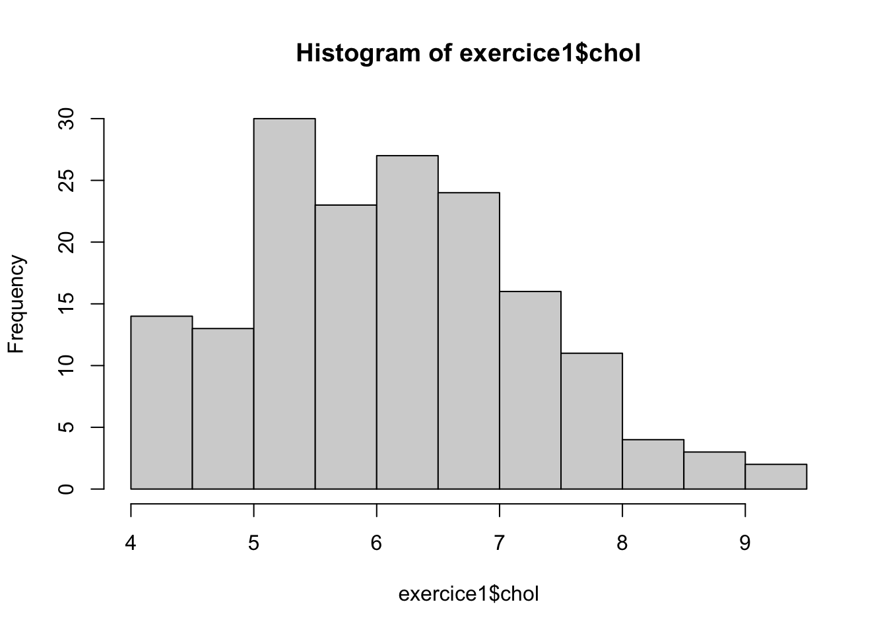
Version Author Date ef88e31 Huong PHAM 2026-03-08 summary(exercice1$sbp)Min. 1st Qu. Median Mean 3rd Qu. Max. 88.0 115.0 126.0 130.2 144.0 187.0hist(exercice1$sbp)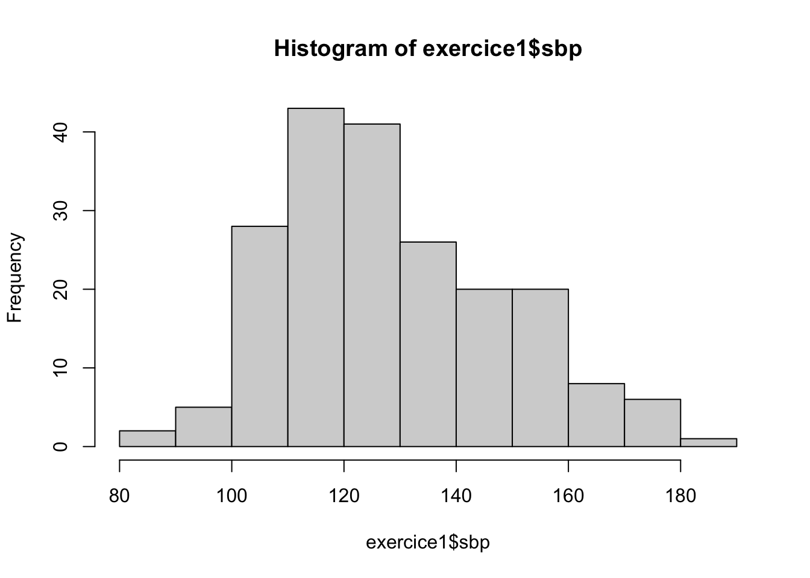
Version Author Date ef88e31 Huong PHAM 2026-03-08 summary(exercice1$dbp)Min. 1st Qu. Median Mean 3rd Qu. Max. 56.00 72.00 80.00 82.31 92.00 120.00hist(exercice1$dbp)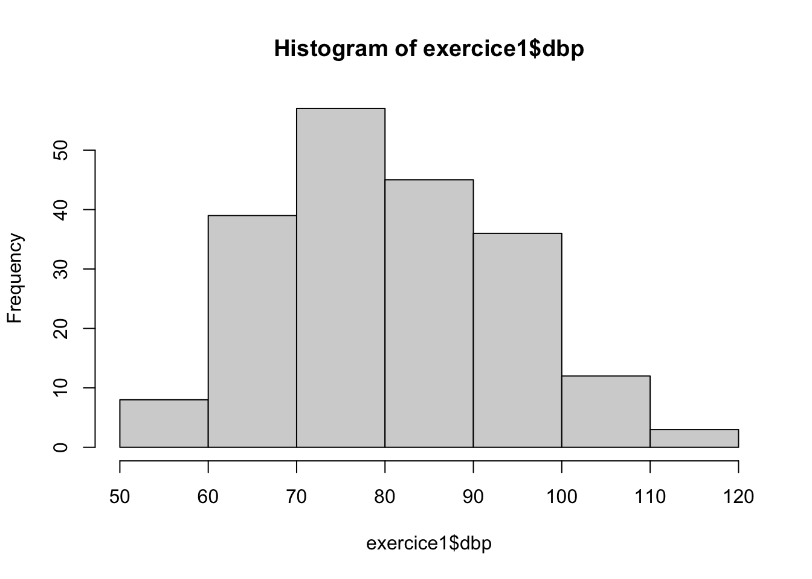
Version Author Date ef88e31 Huong PHAM 2026-03-08 summary(exercice1$age)Min. 1st Qu. Median Mean 3rd Qu. Max. NA's 33.00 43.00 48.00 48.02 53.00 62.00 85hist(exercice1$age)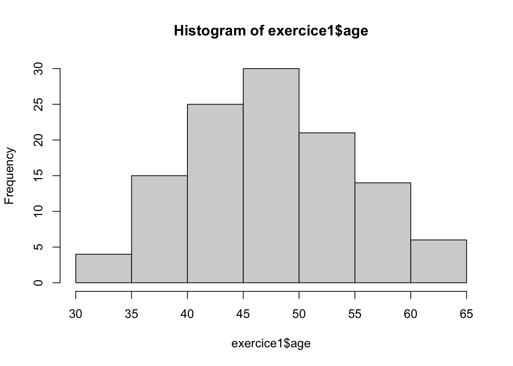
Version Author Date ef88e31 Huong PHAM 2026-03-08 summary(exercice1$bmi)Min. 1st Qu. Median Mean 3rd Qu. Max. 28.99 36.10 37.80 37.45 39.20 45.03hist(exercice1$bmi)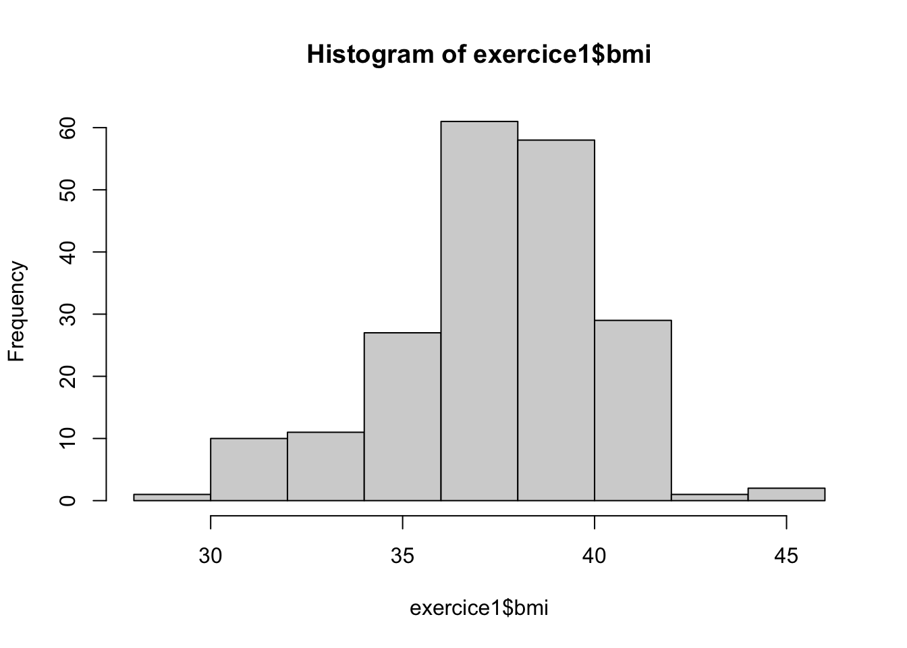
Version Author Date ef88e31 Huong PHAM 2026-03-08 ## Représentation graphique et coefficients de corrélation plot(x = exercice1$sbp, y = exercice1$chol, xlab = "Pression artérielle systolique (mmHg)", ylab = "Taux de cholestérol (mmol/L)")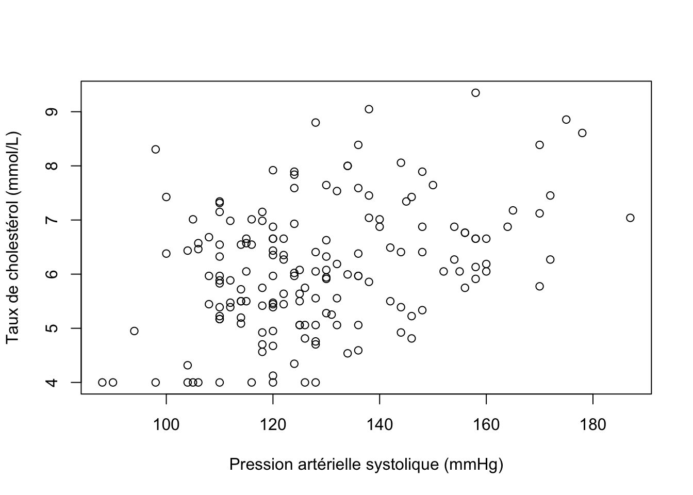
Version Author Date ef88e31 Huong PHAM 2026-03-08 cor(exercice1$sbp, exercice1$chol)[1] NAcor(exercice1$sbp, exercice1$chol, use = "complete.obs")[1] 0.3775908cor.test(exercice1$sbp, exercice1$chol, use = "complete.obs")Pearson's product-moment correlation data: exercice1$sbp and exercice1$chol t = 5.238, df = 165, p-value = 4.895e-07 alternative hypothesis: true correlation is not equal to 0 95 percent confidence interval: 0.2394583 0.5007408 sample estimates: cor 0.3775908plot(x = exercice1$dbp, y = exercice1$chol, xlab = "Pression artérielle diastolique (mmHg)", ylab = "Taux de cholestérol (mmol/L)")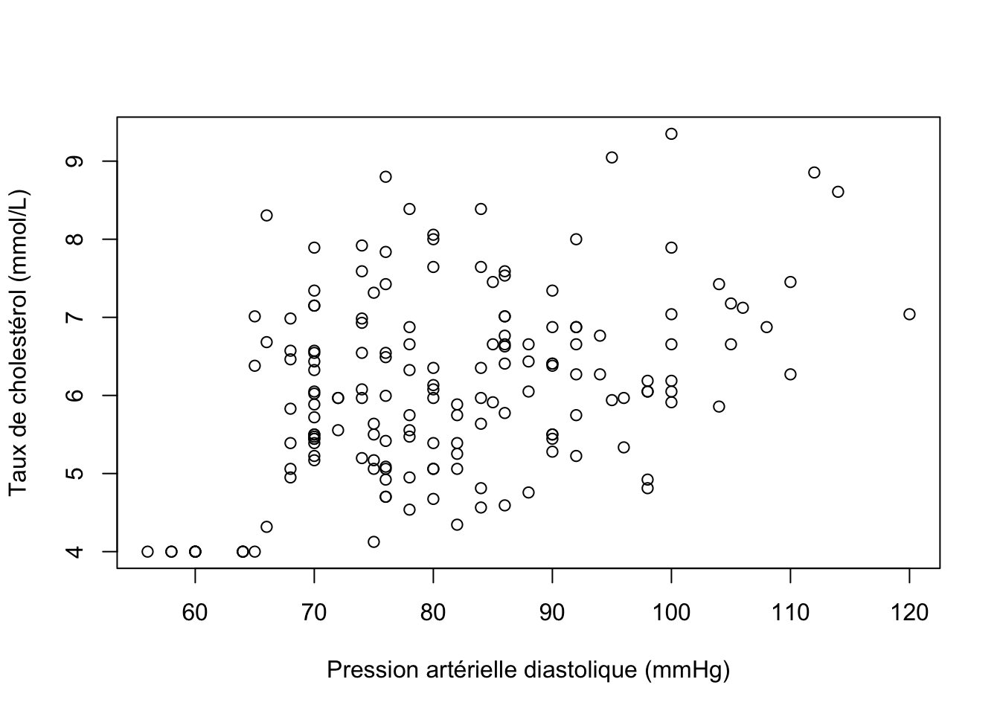
Version Author Date ef88e31 Huong PHAM 2026-03-08 cor(exercice1$dbp, exercice1$chol)[1] NAcor(exercice1$dbp, exercice1$chol, use = "complete.obs")[1] 0.3994832cor.test(exercice1$dbp, exercice1$chol, use = "complete.obs")Pearson's product-moment correlation data: exercice1$dbp and exercice1$chol t = 5.5975, df = 165, p-value = 8.891e-08 alternative hypothesis: true correlation is not equal to 0 95 percent confidence interval: 0.2636122 0.5198114 sample estimates: cor 0.3994832plot(x = exercice1$age, y = exercice1$chol, xlab = "Âge (années)", ylab = "Taux de cholestérol (mmol/L)")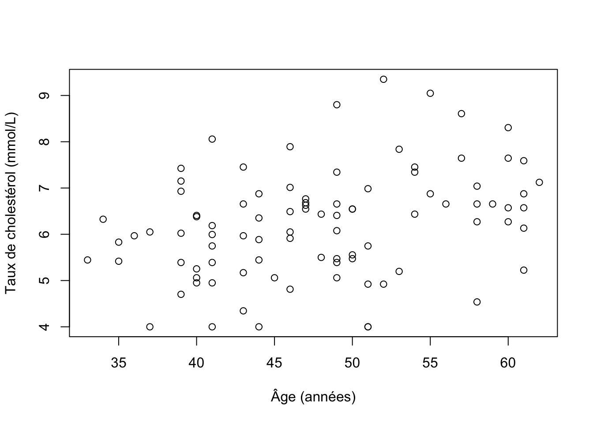
Version Author Date ef88e31 Huong PHAM 2026-03-08 cor(exercice1$age, exercice1$chol)[1] NAcor(exercice1$age, exercice1$chol, use = "complete.obs")[1] 0.3332335cor.test(exercice1$age, exercice1$chol, use = "complete.obs")Pearson's product-moment correlation data: exercice1$age and exercice1$chol t = 3.353, df = 90, p-value = 0.001171 alternative hypothesis: true correlation is not equal to 0 95 percent confidence interval: 0.1378228 0.5036741 sample estimates: cor 0.3332335plot(x = exercice1$bmi, y = exercice1$chol, xlab = "Indice de masse corporelle (kg/m2)", ylab = "Taux de cholestérol (mmol/L)")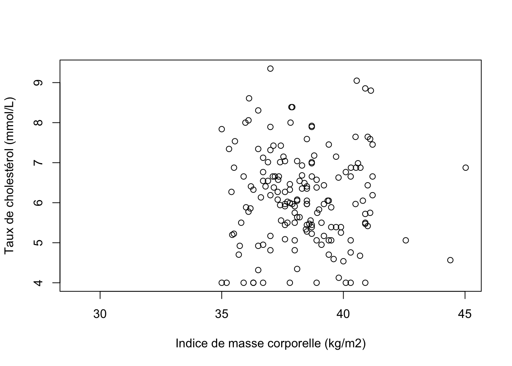
Version Author Date ef88e31 Huong PHAM 2026-03-08 cor(exercice1$bmi, exercice1$chol)[1] NAcor(exercice1$bmi, exercice1$chol, use = "complete.obs")[1] -0.02016888cor.test(exercice1$bmi, exercice1$chol, use = "complete.obs")Pearson's product-moment correlation data: exercice1$bmi and exercice1$chol t = -0.25913, df = 165, p-value = 0.7959 alternative hypothesis: true correlation is not equal to 0 95 percent confidence interval: -0.1715072 0.1320993 sample estimates: cor -0.02016888## Dataset avec données complètes exercice1_bis <- exercice1[complete.cases(exercice1[,c("age","chol", "sbp", "dbp", "bmi")]), ]Estimez une régression linéaire permettant d’expliquer le taux de cholestérol en fonction des pression artérielles systolique et diastolique, de l’âge et de l’IMC. Quelle est la valeur de coefficient de détermination. Que signifie-t-il ?
# 3. Estimation du modèle modele1 <- lm(formula = chol ~ age + sbp + dbp + bmi, data = exercice1_bis) summary(modele1)Call: lm(formula = chol ~ age + sbp + dbp + bmi, data = exercice1_bis) Residuals: Min 1Q Median 3Q Max -2.09118 -0.75423 -0.04517 0.53822 2.60315 Coefficients: Estimate Std. Error t value Pr(>|t|) (Intercept) -0.479776 2.400319 -0.200 0.8420 age 0.040095 0.015592 2.572 0.0118 * sbp -0.004689 0.012010 -0.390 0.6972 dbp 0.031495 0.018150 1.735 0.0862 . bmi 0.073868 0.057611 1.282 0.2032 --- Signif. codes: 0 '***' 0.001 '**' 0.01 '*' 0.05 '.' 0.1 ' ' 1 Residual standard error: 1.056 on 87 degrees of freedom Multiple R-squared: 0.1998, Adjusted R-squared: 0.163 F-statistic: 5.431 on 4 and 87 DF, p-value: 0.0005958Vérifiez les hypothèses sous-jacentes au modèle.
# 4. Vérification des hypothèses du modèle ## Linéarité par(mfrow = c(2,2)) exercice1_bis$residus <- resid(modele1) plot(exercice1_bis$residus ~ exercice1_bis$age, xlab = "Age", ylab = "résidus", main = "Vérification linéarité de l'âge") plot(exercice1_bis$residus ~ exercice1_bis$sbp, xlab = "Pression artérielle systolique", ylab = "résidus", main = "Vérification linéarité de la pression artérielle systolique") plot(exercice1_bis$residus ~ exercice1_bis$dbp, xlab = "Pression artérielle diastolique", ylab = "résidus", main = "Vérification linéarité de la pression artérielle diastolique") plot(exercice1_bis$residus ~ exercice1_bis$bmi, xlab = "IMC", ylab = "résidus", main = "Vérification linéarité de l'IMC")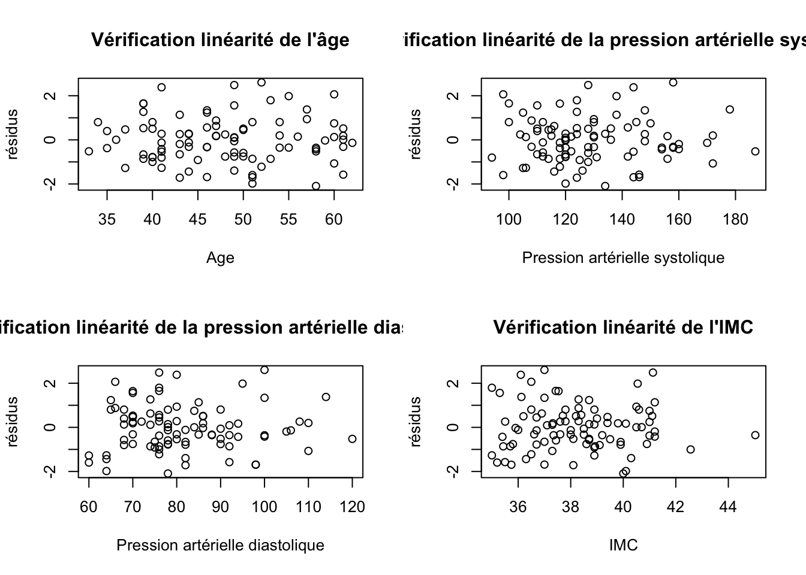
Version Author Date ef88e31 Huong PHAM 2026-03-08 par(mfrow = c(1,1))## Normalité library(car)Warning: package 'car' was built under R version 4.4.3Loading required package: carDataWarning: package 'carData' was built under R version 4.4.3qqPlot(modele1)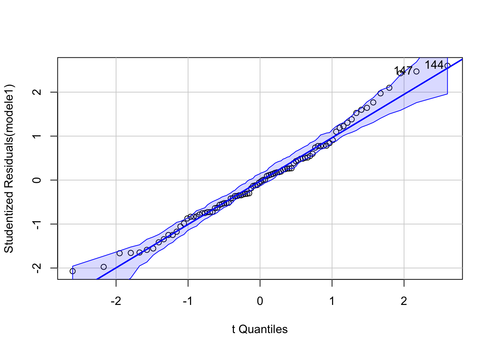
Version Author Date ef88e31 Huong PHAM 2026-03-08 144 147 67 69plot(modele1, which = 2)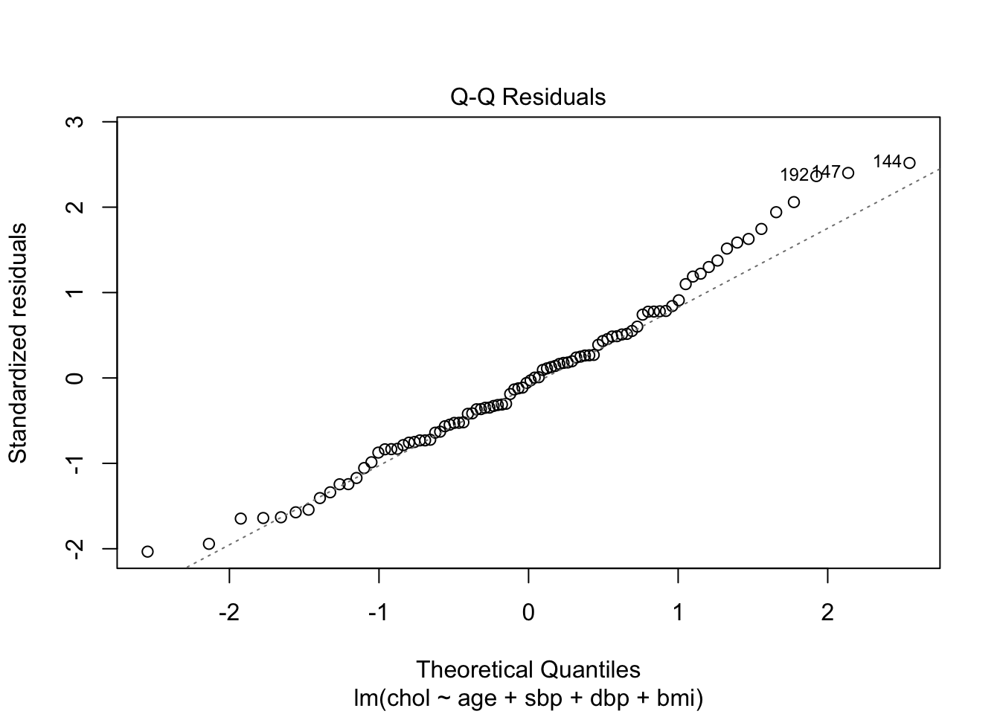
Version Author Date ef88e31 Huong PHAM 2026-03-08 ## Homoscédasticité exercice1_bis$prediction <- predict(modele1, newdata = exercice1_bis) plot(exercice1_bis$residus ~ exercice1_bis$prediction, xlab = "Valeurs prédites", ylab = "Résidus", main = "Graphique des résidus contre les valeurs prédites")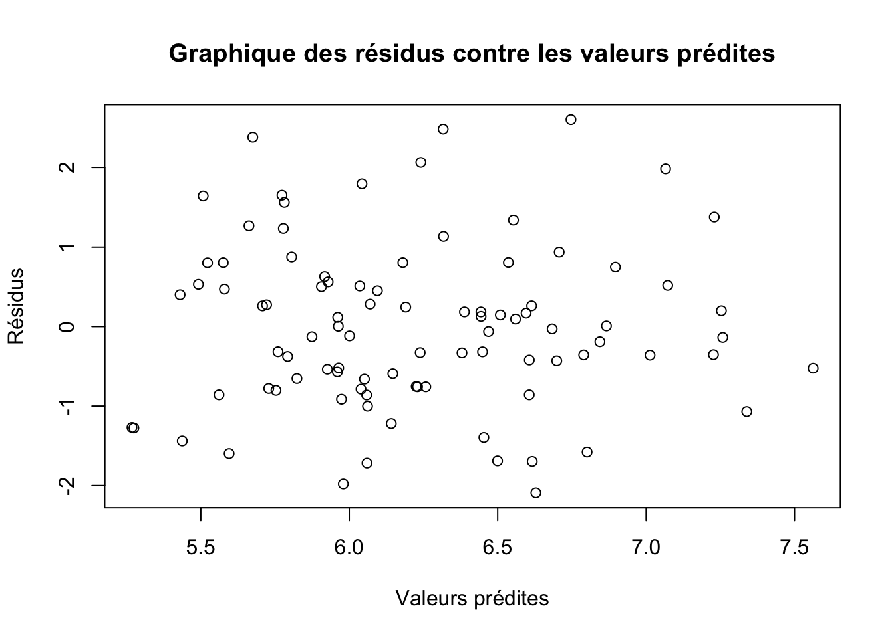
Version Author Date ef88e31 Huong PHAM 2026-03-08 plot(modele1, which = 1)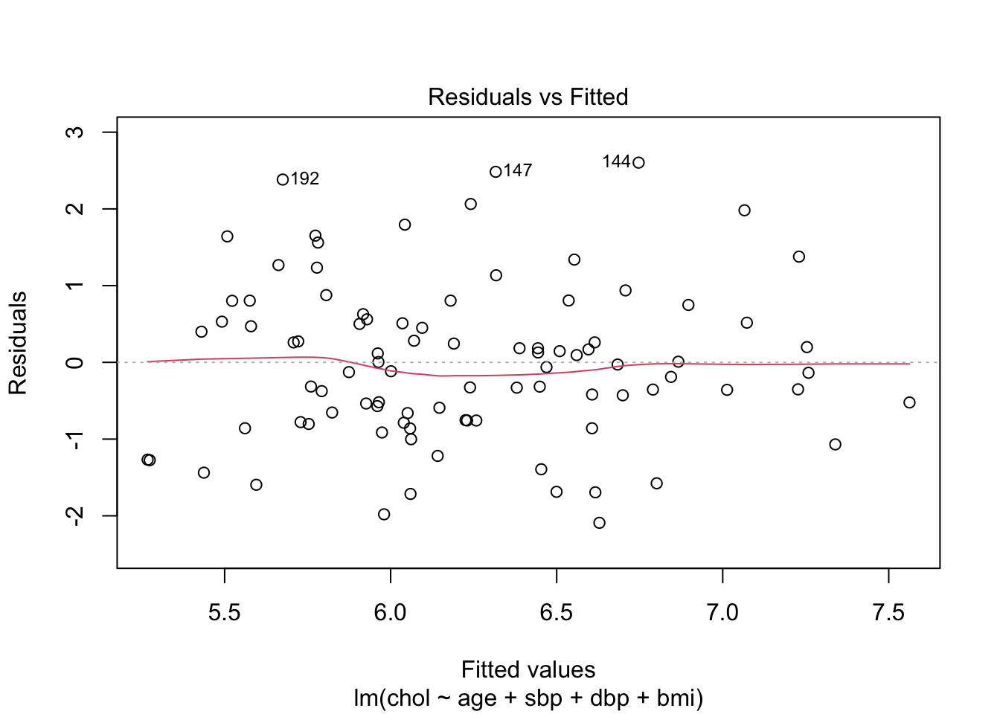
Version Author Date ef88e31 Huong PHAM 2026-03-08 ## Multicolinéarité ### Variance des paramètres summary(modele1)Call: lm(formula = chol ~ age + sbp + dbp + bmi, data = exercice1_bis) Residuals: Min 1Q Median 3Q Max -2.09118 -0.75423 -0.04517 0.53822 2.60315 Coefficients: Estimate Std. Error t value Pr(>|t|) (Intercept) -0.479776 2.400319 -0.200 0.8420 age 0.040095 0.015592 2.572 0.0118 * sbp -0.004689 0.012010 -0.390 0.6972 dbp 0.031495 0.018150 1.735 0.0862 . bmi 0.073868 0.057611 1.282 0.2032 --- Signif. codes: 0 '***' 0.001 '**' 0.01 '*' 0.05 '.' 0.1 ' ' 1 Residual standard error: 1.056 on 87 degrees of freedom Multiple R-squared: 0.1998, Adjusted R-squared: 0.163 F-statistic: 5.431 on 4 and 87 DF, p-value: 0.0005958### Corrélation entre les variables explicatives cor(exercice1_bis[,c(1,6,7,8)])age sbp dbp bmi age 1.00000000 0.34358418 0.30301219 -0.07838923 sbp 0.34358418 1.00000000 0.87861274 0.05805031 dbp 0.30301219 0.87861274 1.00000000 -0.01672517 bmi -0.07838923 0.05805031 -0.01672517 1.00000000### Facteur d'inflation de la variance vif(modele1)age sbp dbp bmi 1.146645 4.647430 4.476243 1.035598Y-a-t’il des observations aberrantes et/ou influentes ?
# 5. Observations aberrrantes et influentes ## Observations aberrantes : leviers leviers <- data.frame(obs = seq(1:92),leviers = hatvalues(modele1)) leviers[leviers$leviers> 0.1087,]obs leviers 132 61 0.1145250 161 73 0.1642284 186 86 0.1631888 187 87 0.1175825exercice1_bis[c(61, 73, 86, 87),]age race chol id cad sbp dbp bmi gender residus prediction 132 58 <NA> 7.0400 2918 no cad 187 120 38.10000 man -0.5225786 7.562579 161 55 indian 6.8750 3600 cad 154 92 45.02692 man -0.3518695 7.226870 186 61 indian 6.1325 4404 cad 158 80 36.60995 man -0.3164991 6.448999 187 44 malay 6.8750 4424 cad 148 108 35.50429 woman 0.2605461 6.614454## Observations influentes : distance de Cook summary(cooks.distance(modele1))Min. 1st Qu. Median Mean 3rd Qu. Max. 2.200e-07 9.963e-04 3.866e-03 1.179e-02 1.046e-02 1.085e-01plot(modele1, which = 4)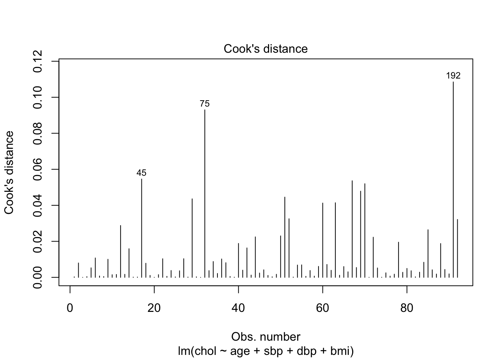
Version Author Date ef88e31 Huong PHAM 2026-03-08 Quelle est la p-valeur du test global de significativité du modèle ? Que concluez-vous ?
## 6. Test global de significativité summary(modele1)Call: lm(formula = chol ~ age + sbp + dbp + bmi, data = exercice1_bis) Residuals: Min 1Q Median 3Q Max -2.09118 -0.75423 -0.04517 0.53822 2.60315 Coefficients: Estimate Std. Error t value Pr(>|t|) (Intercept) -0.479776 2.400319 -0.200 0.8420 age 0.040095 0.015592 2.572 0.0118 * sbp -0.004689 0.012010 -0.390 0.6972 dbp 0.031495 0.018150 1.735 0.0862 . bmi 0.073868 0.057611 1.282 0.2032 --- Signif. codes: 0 '***' 0.001 '**' 0.01 '*' 0.05 '.' 0.1 ' ' 1 Residual standard error: 1.056 on 87 degrees of freedom Multiple R-squared: 0.1998, Adjusted R-squared: 0.163 F-statistic: 5.431 on 4 and 87 DF, p-value: 0.0005958L’effet des différentes variables explicatives est-il significativement différent de 0 ? Concluez puis interprétez les valeurs estimées.
## 7. Significativité et interprétation des paramètres summary(modele1)Call: lm(formula = chol ~ age + sbp + dbp + bmi, data = exercice1_bis) Residuals: Min 1Q Median 3Q Max -2.09118 -0.75423 -0.04517 0.53822 2.60315 Coefficients: Estimate Std. Error t value Pr(>|t|) (Intercept) -0.479776 2.400319 -0.200 0.8420 age 0.040095 0.015592 2.572 0.0118 * sbp -0.004689 0.012010 -0.390 0.6972 dbp 0.031495 0.018150 1.735 0.0862 . bmi 0.073868 0.057611 1.282 0.2032 --- Signif. codes: 0 '***' 0.001 '**' 0.01 '*' 0.05 '.' 0.1 ' ' 1 Residual standard error: 1.056 on 87 degrees of freedom Multiple R-squared: 0.1998, Adjusted R-squared: 0.163 F-statistic: 5.431 on 4 and 87 DF, p-value: 0.0005958Nous souhaiterions prédire, à partir du modèle estimé, le taux de cholesterol d’une personne de 65 ans, avec un IMC de 35kg/m2, présentant une pression artérielle systolique de 134 mmHg et une pression artérielle diastolique de 96 mmHg. Donnez également un intervalle de prédiction.
# 8. Prédiction ## Calcul de la prédiction x_h <- data.frame(age = 65, sbp = 134, dbp = 96, bmi = 35) prediction <- predict(modele1, newdata = x_h, interval = "prediction", type = "response", level = 0.95) predictionfit lwr upr 1 7.106913 4.881493 9.332332
Exercice 2 - Analyse de covariance
Nous souhaitons évaluer l’efficacité de différentes approches thérapeutiques pour réduire les symp- tômes de dépression chez des patients adultes. Pour cela, nous avons recruté 180 participants présentant des symptômes dépressifs modérés à sévères. Chaque participant a été évalué avant le début du traitement à l’aide du PHQ-9, un questionnaire stan- dardisé qui mesure la sévérité de la dépression (score de 0 à 27, où un score élevé indique une dépression plus sévère). Les participants ont ensuite été répartis aléatoirement en trois groupes :
— Groupe Activation : les participants suivent un programme d’activation comportementale, qui vise à augmenter les activités plaisantes et significatives ;
— Groupe TCC : les participants suivent une thérapie cognitivo-comportementale, une approche bien établie pour traiter la dépression ;
— Groupe témoin : les participants ne reçoivent pas de traitement spécifique, mais bénéficient d’un suivi minimal. Après 8 semaines, chaque participant est réévalué avec le même questionnaire PHQ-9 pour mesurer l’évo- lution des symptômes.
L’objectif est de comparer les scores post-traitement entre les trois groupes, tout en tenant compte du score initial (avant traitement). En effet, il est logique qu’un patient très déprimé au départ ait un score post-traitement différent d’un patient moins déprimé, même avec le même type de thérapie.
Importez le jeu de données psychoclinique.csv dans R. Puis mettez en forme les données si nécessaire.
## 1. Importation et mise en forme du jeu de données setwd("/Users/thanhhuong/R/Data_Analysis") psychoclinique <- read.csv(file = "/Volumes/ORICO/Modèle Linaire/TD régression linéaire multiple et ANCOVA-20260121/psychoclinique_interaction.csv", sep = ",", dec = ".", header = TRUE) str(psychoclinique)'data.frame': 180 obs. of 5 variables: $ groupe : chr "Activation" "TCC" "Temoin" "Activation" ... $ phq9_base : num 13.05 15.05 14.12 8.39 18.12 ... $ phq9_post : num 6.34 6.34 7.86 2.86 6.59 ... $ phq9_changement: num -6.72 -8.71 -6.26 -5.53 -11.54 ... $ age : num 36.6 19.8 42 34.7 48.9 ...psychoclinique$groupe <- factor(psychoclinique$groupe) str(psychoclinique)'data.frame': 180 obs. of 5 variables: $ groupe : Factor w/ 3 levels "Activation","TCC",..: 1 2 3 1 2 1 2 1 2 1 ... $ phq9_base : num 13.05 15.05 14.12 8.39 18.12 ... $ phq9_post : num 6.34 6.34 7.86 2.86 6.59 ... $ phq9_changement: num -6.72 -8.71 -6.26 -5.53 -11.54 ... $ age : num 36.6 19.8 42 34.7 48.9 ...Réalisez des statistiques descriptives pour les deux variables explicatives et la variable expliquée individuellement, puis faites la même chose pour chacun des deux scores de dépression en fonction du traitement reçu.
## 2. Statistiques descriptives table(psychoclinique$groupe)Activation TCC Temoin 60 60 60library(tidyverse)Warning: package 'ggplot2' was built under R version 4.4.3Warning: package 'tibble' was built under R version 4.4.3Warning: package 'tidyr' was built under R version 4.4.3Warning: package 'readr' was built under R version 4.4.3Warning: package 'purrr' was built under R version 4.4.3Warning: package 'dplyr' was built under R version 4.4.3Warning: package 'lubridate' was built under R version 4.4.3── Attaching core tidyverse packages ──────────────────────── tidyverse 2.0.0 ── ✔ dplyr 1.2.0 ✔ readr 2.1.6 ✔ forcats 1.0.1 ✔ stringr 1.6.0 ✔ ggplot2 4.0.2 ✔ tibble 3.3.1 ✔ lubridate 1.9.5 ✔ tidyr 1.3.2 ✔ purrr 1.2.1 ── Conflicts ────────────────────────────────────────── tidyverse_conflicts() ── ✖ dplyr::filter() masks stats::filter() ✖ dplyr::lag() masks stats::lag() ✖ dplyr::recode() masks car::recode() ✖ purrr::some() masks car::some() ℹ Use the conflicted package (<http://conflicted.r-lib.org/>) to force all conflicts to become errorspsychoclinique %>% summarise( min = min(phq9_base), median = median(phq9_base), mean = mean(phq9_base), max = max(phq9_base), sd = sd(phq9_base) )min median mean max sd 1 5.862916 14.96422 14.90242 27 3.929892psychoclinique %>% group_by(groupe) %>% summarise( min = min(phq9_base), median = median(phq9_base), mean = mean(phq9_base), max = max(phq9_base), sd = sd(phq9_base) )# A tibble: 3 × 6 groupe min median mean max sd <fct> <dbl> <dbl> <dbl> <dbl> <dbl> 1 Activation 8.12 13.9 14.9 27 4.17 2 TCC 8.65 16.0 15.6 24.3 3.48 3 Temoin 5.86 14.2 14.1 22.8 4.02psychoclinique %>% summarise( min = min(phq9_post), median = median(phq9_post), mean = mean(phq9_post), max = max(phq9_post), sd = sd(phq9_post) )min median mean max sd 1 0 10.69157 10.62256 24.11844 4.377838psychoclinique %>% group_by(groupe) %>% summarise( min = min(phq9_post), median = median(phq9_post), mean = mean(phq9_post), max = max(phq9_post), sd = sd(phq9_post) )# A tibble: 3 × 6 groupe min median mean max sd <fct> <dbl> <dbl> <dbl> <dbl> <dbl> 1 Activation 0 11.3 11.0 19.2 3.72 2 TCC 1.69 6.73 7.64 14.5 3.16 3 Temoin 3.79 13.5 13.2 24.1 4.27Représentation graphiquement la relation entre le traitement, le score de dépression initial et le score de dépression 8 semaines après l’initiation du traitement. Que constatez-vous ?
## 3. Représentation graphique library(ggplot2) ggplot(psychoclinique, aes(x = phq9_base, y = phq9_post, color = groupe)) + geom_point() + labs(x = "PHQ-9 (pré)", y = "PHQ-9 (post)", color = "Groupe") + theme_minimal()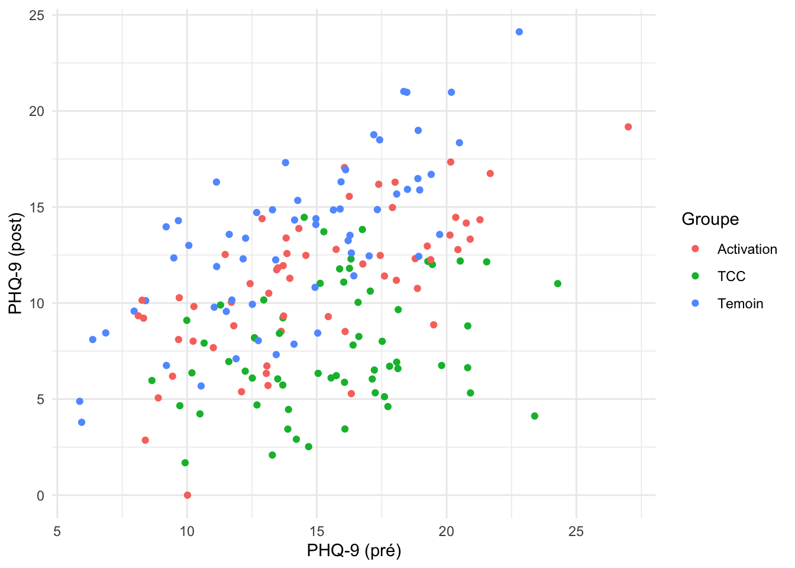
Version Author Date ef88e31 Huong PHAM 2026-03-08 ggplot(psychoclinique, aes(x = phq9_base, y = phq9_post, color = groupe)) + geom_point(alpha = 0.6) + geom_smooth(method = "lm", se = FALSE) + labs(x = "PHQ-9 (pré)", y = "PHQ-9 (post)", color = "Groupe") + theme_minimal()`geom_smooth()` using formula = 'y ~ x'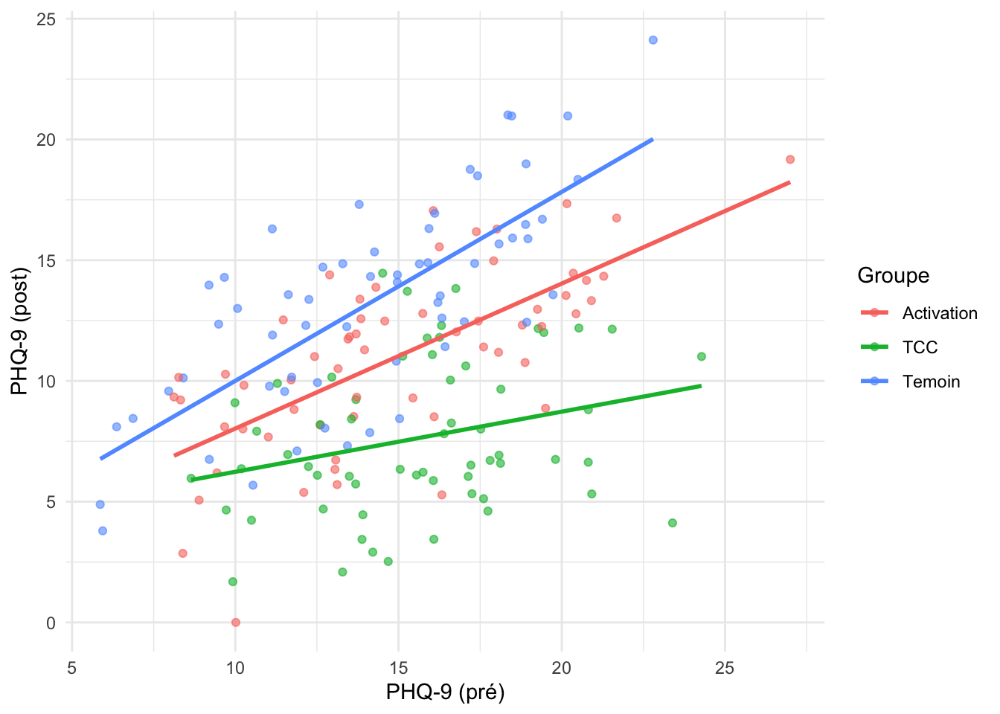
Version Author Date ef88e31 Huong PHAM 2026-03-08 Réalisez une analyse de covariance afin d’évaluer l’effet du traitement après ajustement pour le score de dépression initial.
## 4. Analyse : ANCOVA ### Modification du codage du facteur contrasts(psychoclinique$groupe)TCC Temoin Activation 0 0 TCC 1 0 Temoin 0 1psychoclinique$groupe <- relevel(psychoclinique$groupe, ref = "Temoin") contrasts(psychoclinique$groupe)Activation TCC Temoin 0 0 Activation 1 0 TCC 0 1ancova1 <- lm(phq9_post ~ phq9_base + groupe + phq9_base:groupe, data = psychoclinique)Vérifiez les hypothèses du modèle.
## 5. Vérification des hypothèses ### Normalité plot(ancova1, which = 2)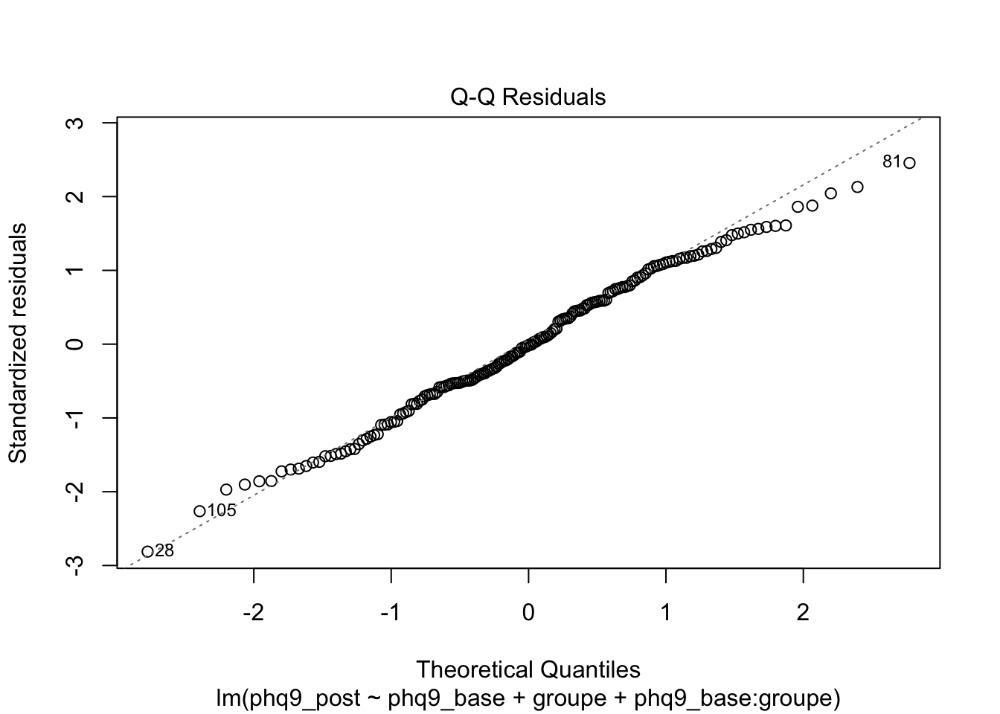
Version Author Date ef88e31 Huong PHAM 2026-03-08 ### Homoscédasticité et linéarité plot(ancova1, which = 1)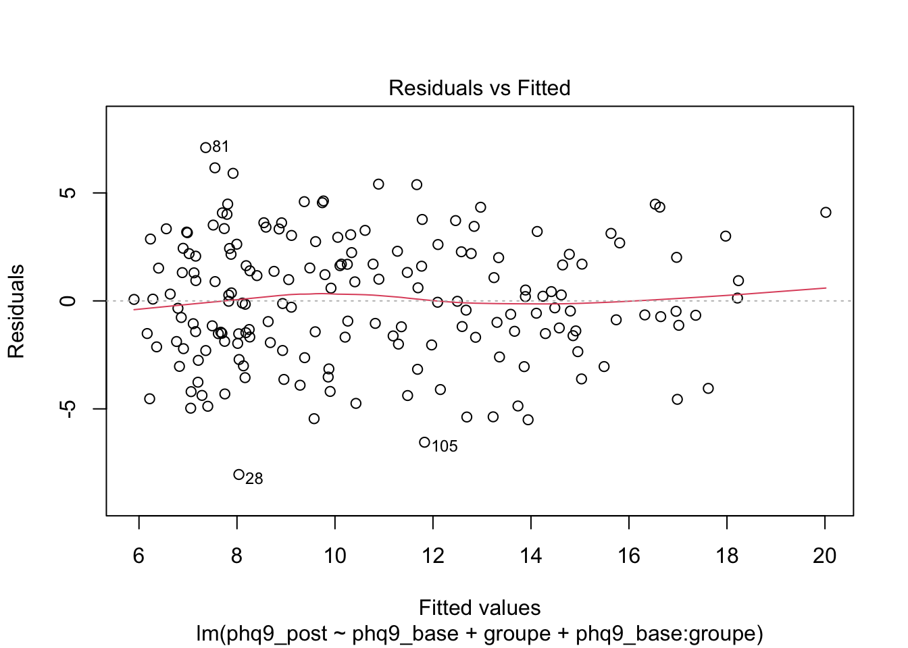
Version Author Date ef88e31 Huong PHAM 2026-03-08 ### Homogénéité des pentes library(car) Anova(ancova1, type = "III")Anova Table (Type III tests) Response: phq9_post Sum Sq Df F value Pr(>F) (Intercept) 21.02 1 2.4686 0.117958 phq9_base 583.95 1 68.5856 3.118e-14 *** groupe 5.73 2 0.3363 0.714896 phq9_base:groupe 117.42 2 6.8956 0.001312 ** Residuals 1481.47 174 --- Signif. codes: 0 '***' 0.001 '**' 0.01 '*' 0.05 '.' 0.1 ' ' 1# L'intéraction n'est pas significative. L'hypothèse est vérifiée.### Ré-estimation du modèle sans interaction ancova2 <- lm(phq9_post ~ phq9_base + groupe, data = psychoclinique)### Vérification des hypothèses du nouveau modèle plot(ancova2, which = 2)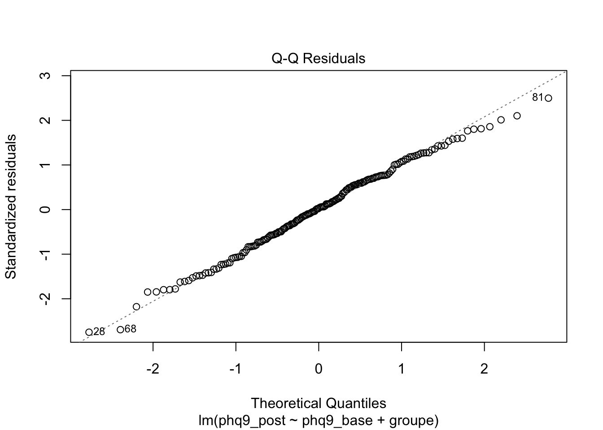
Version Author Date ef88e31 Huong PHAM 2026-03-08 plot(ancova2, which = 1)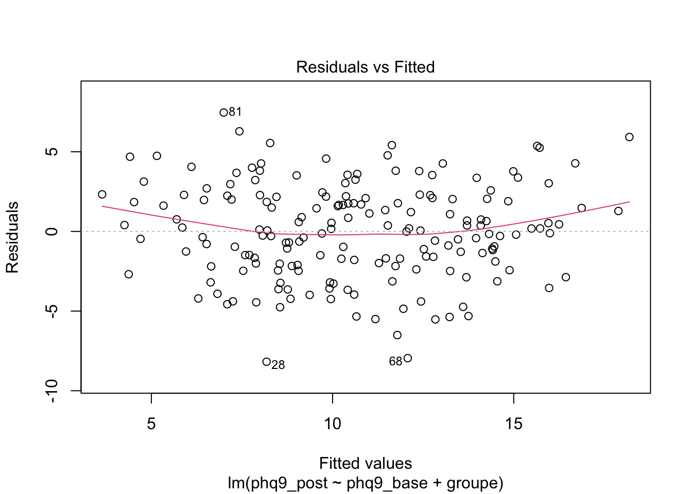
Version Author Date ef88e31 Huong PHAM 2026-03-08 Le traitement a-t-il un effet significatif sur le score de dépression 8 semaines après l’initiation du traitement ? Qu’en est-il du score de dépression initial ? Que pouvez-vous conclure ?
## 6. Interprétation du modèle ### Test-F Anova(ancova2, type = "III")Anova Table (Type III tests) Response: phq9_post Sum Sq Df F value Pr(>F) (Intercept) 292.88 1 32.239 5.531e-08 *** phq9_base 881.39 1 97.020 < 2.2e-16 *** groupe 1231.34 2 67.771 < 2.2e-16 *** Residuals 1598.89 176 --- Signif. codes: 0 '***' 0.001 '**' 0.01 '*' 0.05 '.' 0.1 ' ' 1### Interprétation du score de dépression initial summary(ancova2)Call: lm(formula = phq9_post ~ phq9_base + groupe, data = psychoclinique) Residuals: Min 1Q Median 3Q Max -8.1789 -2.0497 0.0885 2.1161 7.4638 Coefficients: Estimate Std. Error t value Pr(>|t|) (Intercept) 5.15522 0.90793 5.678 5.53e-08 *** phq9_base 0.57181 0.05805 9.850 < 2e-16 *** groupeActivation -2.70399 0.55225 -4.896 2.20e-06 *** groupeTCC -6.45819 0.55727 -11.589 < 2e-16 *** --- Signif. codes: 0 '***' 0.001 '**' 0.01 '*' 0.05 '.' 0.1 ' ' 1 Residual standard error: 3.014 on 176 degrees of freedom Multiple R-squared: 0.5339, Adjusted R-squared: 0.526 F-statistic: 67.21 on 3 and 176 DF, p-value: < 2.2e-16Intercept : 1.09 => phq9_post por le groupe Témoin lorsque phq9_base = 0
phq9_base : 0.72 => effet du phq9_base quelque soit le traitement (pente, identique pour les 3 groupes)
groupeActivation : -2.48 => Différente entre le groupe activation et le groupe témoin après ajustement sur le phq9_base
groupeTCC : -3.15 => Différence entre le groupe TCC et le groupe témoin après ajustement sur le phq9_base
# Autre approche library(emmeans)Warning: package 'emmeans' was built under R version 4.4.3Welcome to emmeans. Caution: You lose important information if you filter this package's results. See '? untidy'emmeans(ancova2, pairwise ~ groupe, adjust = "BH")$emmeans groupe emmean SE df lower.CL upper.CL Temoin 13.68 0.392 176 12.90 14.45 Activation 10.97 0.389 176 10.20 11.74 TCC 7.22 0.391 176 6.45 7.99 Confidence level used: 0.95 $contrasts contrast estimate SE df t.ratio p.value Temoin - Activation 2.70 0.552 176 4.896 <0.0001 Temoin - TCC 6.46 0.557 176 11.589 <0.0001 Activation - TCC 3.75 0.552 176 6.803 <0.0001 P value adjustment: BH method for 3 testsRefaites ces analyses avec la base de données psychoclinique_interaction.csv
## 7. Analyses avec les données du fichier psychoclinique_interaction.csv ### a. Importation et mise en forme des données psychoclinique_interaction <- read.csv(file = "/Volumes/ORICO/Modèle Linaire/TD régression linéaire multiple et ANCOVA-20260121/psychoclinique_interaction.csv", sep = ",", dec = ".", header = TRUE) str(psychoclinique_interaction)'data.frame': 180 obs. of 5 variables: $ groupe : chr "Activation" "TCC" "Temoin" "Activation" ... $ phq9_base : num 13.05 15.05 14.12 8.39 18.12 ... $ phq9_post : num 6.34 6.34 7.86 2.86 6.59 ... $ phq9_changement: num -6.72 -8.71 -6.26 -5.53 -11.54 ... $ age : num 36.6 19.8 42 34.7 48.9 ...psychoclinique_interaction$groupe <- as.factor(psychoclinique_interaction$groupe) str(psychoclinique_interaction)'data.frame': 180 obs. of 5 variables: $ groupe : Factor w/ 3 levels "Activation","TCC",..: 1 2 3 1 2 1 2 1 2 1 ... $ phq9_base : num 13.05 15.05 14.12 8.39 18.12 ... $ phq9_post : num 6.34 6.34 7.86 2.86 6.59 ... $ phq9_changement: num -6.72 -8.71 -6.26 -5.53 -11.54 ... $ age : num 36.6 19.8 42 34.7 48.9 ...### b. Statistiques descriptives table(psychoclinique_interaction$groupe)Activation TCC Temoin 60 60 60library(tidyverse) psychoclinique_interaction %>% summarise( min = min(phq9_base), median = median(phq9_base), mean = mean(phq9_base), max = max(phq9_base), sd = sd(phq9_base) )min median mean max sd 1 5.862916 14.96422 14.90242 27 3.929892psychoclinique_interaction %>% group_by(groupe) %>% summarise( min = min(phq9_base), median = median(phq9_base), mean = mean(phq9_base), max = max(phq9_base), sd = sd(phq9_base) )# A tibble: 3 × 6 groupe min median mean max sd <fct> <dbl> <dbl> <dbl> <dbl> <dbl> 1 Activation 8.12 13.9 14.9 27 4.17 2 TCC 8.65 16.0 15.6 24.3 3.48 3 Temoin 5.86 14.2 14.1 22.8 4.02psychoclinique_interaction %>% summarise( min = min(phq9_post), median = median(phq9_post), mean = mean(phq9_post), max = max(phq9_post), sd = sd(phq9_post) )min median mean max sd 1 0 10.69157 10.62256 24.11844 4.377838psychoclinique_interaction %>% group_by(groupe) %>% summarise( min = min(phq9_post), median = median(phq9_post), mean = mean(phq9_post), max = max(phq9_post), sd = sd(phq9_post) )# A tibble: 3 × 6 groupe min median mean max sd <fct> <dbl> <dbl> <dbl> <dbl> <dbl> 1 Activation 0 11.3 11.0 19.2 3.72 2 TCC 1.69 6.73 7.64 14.5 3.16 3 Temoin 3.79 13.5 13.2 24.1 4.27### c. Représentation graphique library(ggplot2) ggplot(psychoclinique_interaction, aes(phq9_base, phq9_post, color = groupe)) + geom_point() + labs(x = "PHQ-9 (pré)", y = "PHQ-9 (post)") + theme_minimal()Version Author Date ef88e31 Huong PHAM 2026-03-08 ggplot(psychoclinique_interaction, aes(phq9_base, phq9_post, color = groupe)) + geom_point(alpha = 0.6) + geom_smooth(method = "lm", se = FALSE) + labs(x = "PHQ-9 (pré)", y = "PHQ-9 (post)") + theme_minimal()`geom_smooth()` using formula = 'y ~ x'Version Author Date ef88e31 Huong PHAM 2026-03-08 ### d. Analyse : ANCOVA ### Modification du codage du facteur contrasts(psychoclinique_interaction$groupe)TCC Temoin Activation 0 0 TCC 1 0 Temoin 0 1psychoclinique_interaction$groupe <- relevel(psychoclinique_interaction$groupe, ref = "Temoin") contrasts(psychoclinique_interaction$groupe)Activation TCC Temoin 0 0 Activation 1 0 TCC 0 1ancova3 <- lm(phq9_post ~ phq9_base + groupe + phq9_base:groupe, data = psychoclinique_interaction)### e. Vérification des hypothèses ### Normalité plot(ancova3, which = 2)
Version Author Date ef88e31 Huong PHAM 2026-03-08 ### Homoscédasticité et linéaité plot(ancova3, which = 1)
Version Author Date ef88e31 Huong PHAM 2026-03-08 ### Homogénéité des pentes library(car) Anova(ancova3, type = "III")Anova Table (Type III tests) Response: phq9_post Sum Sq Df F value Pr(>F) (Intercept) 21.02 1 2.4686 0.117958 phq9_base 583.95 1 68.5856 3.118e-14 *** groupe 5.73 2 0.3363 0.714896 phq9_base:groupe 117.42 2 6.8956 0.001312 ** Residuals 1481.47 174 --- Signif. codes: 0 '***' 0.001 '**' 0.01 '*' 0.05 '.' 0.1 ' ' 1# L'intéraction est significative. L'hypothèse d'homogénéité des pentes n'est pas vérifiée.### f. Interprétation des résultats summary(ancova3)Call: lm(formula = phq9_post ~ phq9_base + groupe + phq9_base:groupe, data = psychoclinique_interaction) Residuals: Min 1Q Median 3Q Max -8.0386 -1.8757 -0.0407 2.1904 7.0992 Coefficients: Estimate Std. Error t value Pr(>|t|) (Intercept) 2.17941 1.38712 1.571 0.117958 phq9_base 0.78241 0.09447 8.282 3.12e-14 *** groupeActivation -0.15448 1.97801 -0.078 0.937839 groupeTCC 1.56484 2.23295 0.701 0.484366 phq9_base:groupeActivation -0.18204 0.13118 -1.388 0.166987 phq9_base:groupeTCC -0.53320 0.14441 -3.692 0.000297 *** --- Signif. codes: 0 '***' 0.001 '**' 0.01 '*' 0.05 '.' 0.1 ' ' 1 Residual standard error: 2.918 on 174 degrees of freedom Multiple R-squared: 0.5682, Adjusted R-squared: 0.5558 F-statistic: 45.79 on 5 and 174 DF, p-value: < 2.2e-16library(emmeans) emmeans(ancova3, pairwise ~ groupe, asjust = "BH")NOTE: Results may be misleading due to involvement in interactions$emmeans groupe emmean SE df lower.CL upper.CL Temoin 13.84 0.384 174 13.1 14.60 Activation 10.97 0.377 174 10.2 11.72 TCC 7.46 0.385 174 6.7 8.22 Confidence level used: 0.95 $contrasts contrast estimate SE df t.ratio p.value Temoin - Activation 2.87 0.538 174 5.333 <0.0001 Temoin - TCC 6.38 0.544 174 11.735 <0.0001 Activation - TCC 3.51 0.539 174 6.521 <0.0001 P value adjustment: tukey method for comparing a family of 3 estimatesemtrends(ancova3, pairwise ~ groupe, var = "phq9_base", adjust = "BH")$emtrends groupe phq9_base.trend SE df lower.CL upper.CL Temoin 0.782 0.0945 174 0.5959 0.969 Activation 0.600 0.0910 174 0.4207 0.780 TCC 0.249 0.1090 174 0.0336 0.465 Confidence level used: 0.95 $contrasts contrast estimate SE df t.ratio p.value Temoin - Activation 0.182 0.131 174 1.388 0.1670 Temoin - TCC 0.533 0.144 174 3.692 0.0009 Activation - TCC 0.351 0.142 174 2.470 0.0217 P value adjustment: BH method for 3 tests
Exercices supplémentaires
1 - Questions de cours
Régression linéaire multiple
- Quelle est la différence entre une régression linéaire simple et une régression linéaire multiple ?
- Donnez la forme générale de l’équation d’une régression linéaire multiple.
- Que représente le coefficient β0 dans un modèle de régression linéaire multiple ?
- Quelle est la méthode utilisée pour estimer les paramètres d’un modèle de régression linéaire multiple ?
- Écrivez la formule matricielle de l’estimateur des moindres carrés pour β.
- Quelles sont les hypothèses fondamentales d’un modèle de régression linéaire multiple ?
- Comment calcule-t-on le coefficient de détermination R2 et que signifie-t-il ?
- Pourquoi utilise-t-on le coefficient de détermination ajusté Ra2 et comment se calcule-t-il ?
- Quelle est la statistique de test utilisée pour vérifier la significativité globale d’un modèle ?
- Quelle est la statistique de test pour évaluer la significativité individuelle d’un paramètre βj ?
- Donnez la formule d’un intervalle de prédiction pour une nouvelle observation.
- Quelles sont les conséquences de la multicolinéarité sur l’interprétation des paramètres ?
- Comment calcule-t-on le facteur d’inflation de la variance (VIF) et que signifie-t-il ?
- Quelle règle pratique permet d’identifier une observation influente à partir de la distance de Cook ?
- Quelle est la différence entre une valeur aberrante et une valeur influente ?
Analyse de Covariance (ANCOVA)
- Qu’est-ce qu’une analyse de covariance (ANCOVA) et dans quel contexte l’utilise-t-on ?
- Donnez la forme générale du modèle ANCOVA sans interaction.
- Que signifie l’hypothèse d’homogénéité des pentes dans une ANCOVA ?
- Comment tester la significativité d’un terme d’interaction dans une ANCOVA ?
- Dans le cadre d’une ANCOVA, comment interpréter un coefficient associé à une variable qualita- tive (facteur) par rapport au niveau de référence ?
Exercices R
Exercice 1
Une étude clinique a été menée sur 250 patients traités par un nouvel antihypertenseur. Pour chaque patient, on a mesuré :
— Concentration plasmatique du médicament (mg/L) ;
— Âge (années) ;
— Poids (kg) ;
— Clairance rénale (mL/min) ;
— Score d’adhérence au traitement (échelle de 0 à 10).
Objectif : Étudier la relation entre la concentration plasmatique d’un médicament (mg/L) et plu- sieurs caractéristiques individuelles chez des patients sous traitement antihypertenseur.
Importez le jeu de données pharma_study.csv dans R et mettez-le en forme si nécessaire.
# 1. Importation et mise en forme des données pharma <- read.csv("/Volumes/ORICO/Modèle Linaire/TD régression linéaire multiple et ANCOVA-20260121/Exercices supplémentaires-20260308/pharma_study.csv", sep = ",", dec = ".", header = TRUE) str(pharma)'data.frame': 250 obs. of 5 variables: $ age : int 56 35 70 85 38 52 46 79 43 64 ... $ poids : num 69.4 46 45 55.7 73.5 87.1 87.6 77.6 59.5 68.7 ... $ clairance: num 116.2 85.6 118.8 93.9 129.5 ... $ adherence: num 8.8 8.5 5.3 3.3 7.8 8 9.3 8.8 4.7 6.7 ... $ conc : num 3.46 3.83 4.32 3.24 4.35 ...# Aperçu et préparation glimpse(pharma)Rows: 250 Columns: 5 $ age <int> 56, 35, 70, 85, 38, 52, 46, 79, 43, 64, 32, 63, 75, 32, 50, … $ poids <dbl> 69.4, 46.0, 45.0, 55.7, 73.5, 87.1, 87.6, 77.6, 59.5, 68.7, … $ clairance <dbl> 116.2, 85.6, 118.8, 93.9, 129.5, 102.0, 104.1, 84.7, 121.5, … $ adherence <dbl> 8.8, 8.5, 5.3, 3.3, 7.8, 8.0, 9.3, 8.8, 4.7, 6.7, 9.9, 9.3, … $ conc <dbl> 3.457, 3.833, 4.321, 3.242, 4.352, 3.296, 4.625, 4.947, 3.21…pharma <- pharma %>% mutate( age = as.numeric(age), poids = as.numeric(poids), clairance = as.numeric(clairance), adherence = as.numeric(adherence), conc = as.numeric(conc) )Réalisez des statistiques descriptives pour chaque variable et calculez les corrélations entre la concentration plasmatique et les variables explicatives. Que constatez-vous ?
#2. Statistiques descriptives ## Plusieurs possibilités ### option 1 summary(pharma)age poids clairance adherence Min. :30.00 Min. : 45.00 Min. : 73.20 Min. :2.700 1st Qu.:46.00 1st Qu.: 67.85 1st Qu.: 94.58 1st Qu.:6.400 Median :61.00 Median : 77.20 Median :104.80 Median :7.500 Mean :58.92 Mean : 77.15 Mean :104.84 Mean :7.329 3rd Qu.:72.00 3rd Qu.: 86.67 3rd Qu.:115.72 3rd Qu.:8.675 Max. :85.00 Max. :113.20 Max. :150.00 Max. :9.900 conc Min. :1.636 1st Qu.:3.120 Median :3.608 Mean :3.557 3rd Qu.:4.064 Max. :5.197### option 2 (où nous pouvons choisir les statistiques présentées) library(tidyverse) pharma %>% summarise( across(everything(), list(moy=mean, sd=sd)))age_moy age_sd poids_moy poids_sd clairance_moy clairance_sd adherence_moy 1 58.924 15.68945 77.1504 14.40612 104.8408 14.50148 7.3292 adherence_sd conc_moy conc_sd 1 1.560837 3.556752 0.721237## Corrélations des variables explicatives avec la concentration plasmatique cor(pharma$conc, pharma$adherence)[1] 0.4956683cor(pharma$conc, pharma$age)[1] 0.2797217cor(pharma$conc, pharma$poids)[1] -0.1410113cor(pharma$conc, pharma$clairance)[1] -0.3042902Estimez un modèle de régression linéaire multiple expliquant la concentration plasmatique en fonction des quatre variables explicatives.
# 3. Estimation d'un modèle de régression linéaire multiple m1 <- lm(conc ~ age + poids + clairance + adherence, data = pharma)Vérifiez les hypothèses du modèle (linéarité, normalité des résidus, homoscédasticité, absence de multicolinéarité).
# 4. Vérification des hypothèses pharma$resid <- resid(m1) plot(m1, which = 2) # QQplot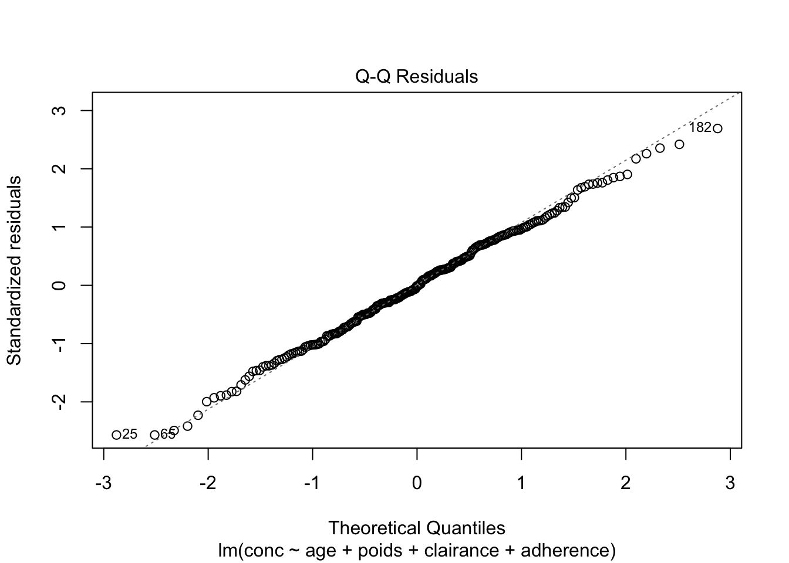
Version Author Date ef88e31 Huong PHAM 2026-03-08 plot(m1, which = 1) # résidus vs valeurs ajustés (homoscédasticité)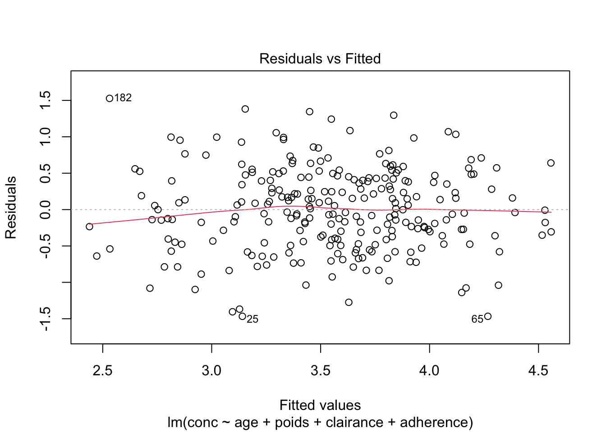
Version Author Date ef88e31 Huong PHAM 2026-03-08 par(mfrow=c(2,2)) ## Linéarité de la fonction de régression plot(pharma$age,pharma$resid) plot(pharma$clairance,pharma$resid) plot(pharma$poids,pharma$resid) plot(pharma$adherence,pharma$resid)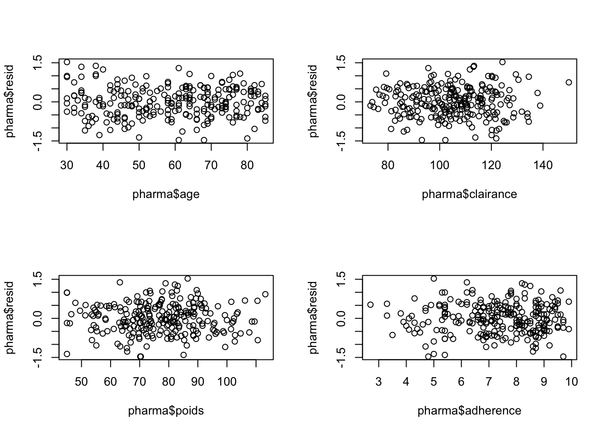
Version Author Date ef88e31 Huong PHAM 2026-03-08 par(mfrow=c(1,1))## Multicolinéarité : VIF library(car) vif(m1)age poids clairance adherence 1.621135 1.004179 1.620119 1.004784Interprétez le coefficient de détermination R2.
# 5. Coefficient de détermination summary(m1)$r.squared[1] 0.3720899# Valeurs aberrantes et influentes lev <- hatvalues(m1) # Leviers = valeurs aberrantes n <- nrow(pharma) p <- 4 # Nombre de variables explicatives seuil_levier <- 2*(p+1)/n seuil_levier[1] 0.04lev[lev> seuil_levier]2 3 4 13 69 106 148 0.06525819 0.04494048 0.05174815 0.04700965 0.04258694 0.04633633 0.05191947 159 199 0.05740694 0.04935146pharma[c(2,3,4,13,69,106,148,159,199),]age poids clairance adherence conc resid 2 35 46.0 85.6 8.5 3.833 -0.1907706069 3 70 45.0 118.8 5.3 4.321 0.9912986945 4 85 55.7 93.9 3.3 3.242 0.1049525723 13 75 69.2 130.5 7.1 4.336 0.8463345358 69 80 85.1 121.9 5.4 1.691 -1.4045219525 106 77 76.5 105.0 2.7 3.195 0.5253338883 148 38 77.7 91.0 4.1 2.753 -0.0004997424 159 37 107.7 98.5 4.5 1.992 -0.5407070181 199 32 91.0 150.0 8.0 3.722 0.7485411028cook <- cooks.distance(m1) # Distance de Cook : valeurs influentes summary(cook) # Valeurs < 1 => Pas de valeurs influentesMin. 1st Qu. Median Mean 3rd Qu. Max. 1.000e-08 4.106e-04 1.857e-03 4.327e-03 4.772e-03 5.522e-02Identifiez les observations aberrantes et/ou influentes.
Testez la significativité globale du modèle et celle des paramètres individuels. Interprétez les coefficients estimés.
# 7. Significativité globale et paramètres individuels summary(m1)Call: lm(formula = conc ~ age + poids + clairance + adherence, data = pharma) Residuals: Min 1Q Median 3Q Max -1.46683 -0.40590 -0.00541 0.41738 1.52768 Coefficients: Estimate Std. Error t value Pr(>|t|) (Intercept) 2.885811 0.542320 5.321 2.33e-07 *** age 0.008834 0.002963 2.981 0.00316 ** poids -0.007945 0.002540 -3.128 0.00197 ** clairance -0.008584 0.003205 -2.678 0.00790 ** adherence 0.226944 0.023449 9.678 < 2e-16 *** --- Signif. codes: 0 '***' 0.001 '**' 0.01 '*' 0.05 '.' 0.1 ' ' 1 Residual standard error: 0.5762 on 245 degrees of freedom Multiple R-squared: 0.3721, Adjusted R-squared: 0.3618 F-statistic: 36.3 on 4 and 245 DF, p-value: < 2.2e-16p-valeur test global < 0.05 => Le modèle est significatif
Tous les paramètres ont une p-valeur < 0.05 => Toutes les variables explicatives ont un effet significatif sur la concentration plasmatique du médicament.
Prédisez la concentration plasmatique pour un patient de 70 ans, pesant 85 kg, avec une clairance rénale de 60 mL/min et un score d’adhérence de 8. Fournissez un intervalle de prédiction.
# 8. Prédiction avec intervalle de prédiction new_pt <- data.frame(age=70, poids=85, clairance=60, adherence=8) predict(m1, newdata=new_pt, interval="prediction", level=0.95)fit lwr upr 1 4.129373 2.964919 5.293827
Exercice 2
Nous souhaitons évaluer l’efficacité de trois régimes alimentaires pour réduire la glycémie (12 semaines après l’introduction du régime) chez des patients diabétiques, en tenant compte de la glycémie initiale. Une étude a ainsi été menée auprès de 150 patients diabétiques répartis aléatoirement en trois groupes : régime méditerranéen, régime pauvre en glucides, régime standard (témoin). Pour chaque patient, la glycémie à jeun (mmol/L) a été mesurée avant le début du régime et après 12 semaines.
Importez le jeu de données diet_diabetes.csv dans R et mettez-le en forme si nécessaire.
# 1. Importation et mise en forme des données diet <- read.csv("/Volumes/ORICO/Modèle Linaire/TD régression linéaire multiple et ANCOVA-20260121/Exercices supplémentaires-20260308/diet_diabetes.csv", sep = ",", dec = ".", header = TRUE) str(diet)'data.frame': 150 obs. of 3 variables: $ regime : chr "LowCarb" "Standard" "LowCarb" "LowCarb" ... $ gly_base: num 5.43 7.17 7.59 10.25 7.28 ... $ gly_post: num 5.19 6.81 4.92 8.35 5.44 5.38 6.06 5.05 6.55 3.78 ...diet$regime <- as.factor(diet$regime) str(diet)'data.frame': 150 obs. of 3 variables: $ regime : Factor w/ 3 levels "LowCarb","Mediterraneen",..: 1 3 1 1 2 1 2 3 1 1 ... $ gly_base: num 5.43 7.17 7.59 10.25 7.28 ... $ gly_post: num 5.19 6.81 4.92 8.35 5.44 5.38 6.06 5.05 6.55 3.78 ...Réalisez des statistiques descriptives pour la glycémie initiale, la glycémie après 12 semaines et le régime alimentaire.
# 2. Statistiques descriptives ## type de régime table(diet$regime)LowCarb Mediterraneen Standard 50 50 50## Glycémie initiale summary(diet$gly_base)Min. 1st Qu. Median Mean 3rd Qu. Max. 4.500 7.090 7.800 7.881 8.705 11.590diet%>% summarise( moy_base = mean(gly_base), sd_base = sd(gly_base) )moy_base sd_base 1 7.8808 1.321642diet %>% group_by(regime) %>% summarise( n = n(), moy_base = mean(gly_base), sd_base = sd(gly_base) )# A tibble: 3 × 4 regime n moy_base sd_base <fct> <int> <dbl> <dbl> 1 LowCarb 50 7.85 1.46 2 Mediterraneen 50 7.92 1.21 3 Standard 50 7.87 1.31## Glycémie post-intervention summary(diet$gly_post)Min. 1st Qu. Median Mean 3rd Qu. Max. 3.500 5.242 6.010 6.152 6.840 9.490diet%>% summarise( moy_post = mean(gly_post), sd_post = sd(gly_post) )moy_post sd_post 1 6.151733 1.385686diet %>% group_by(regime) %>% summarise( n = n(), moy_post = mean(gly_post), sd_post = sd(gly_post) )# A tibble: 3 × 4 regime n moy_post sd_post <fct> <int> <dbl> <dbl> 1 LowCarb 50 5.55 1.32 2 Mediterraneen 50 6.05 1.23 3 Standard 50 6.86 1.30Représentez graphiquement la relation entre le régime, la glycémie initiale et la glycémie après 12 semaines. Que constatez-vous ?
# 3. Représentation graphique Visualisations boxplot(gly_post ~ regime, data=diet)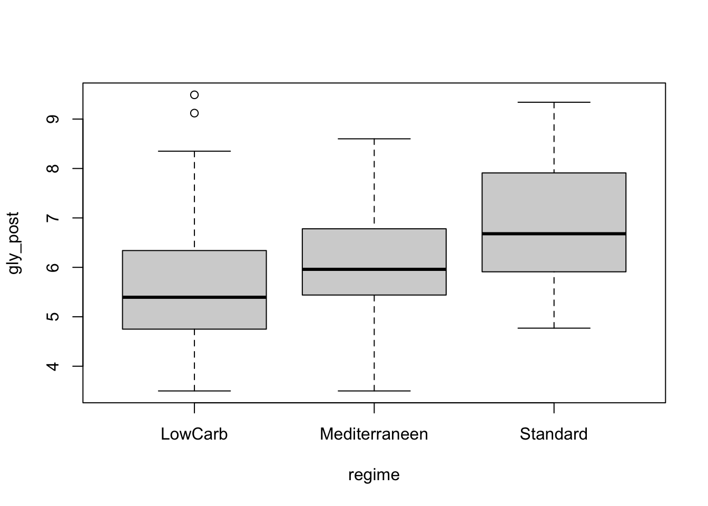
Version Author Date ef88e31 Huong PHAM 2026-03-08 library(ggplot2) ggplot(diet, aes(x = gly_base, y = gly_post, color = regime)) + geom_point() + labs(x = "Glycémie (pré)", y = "Glycémie (post)", color = "Régime") + theme_minimal()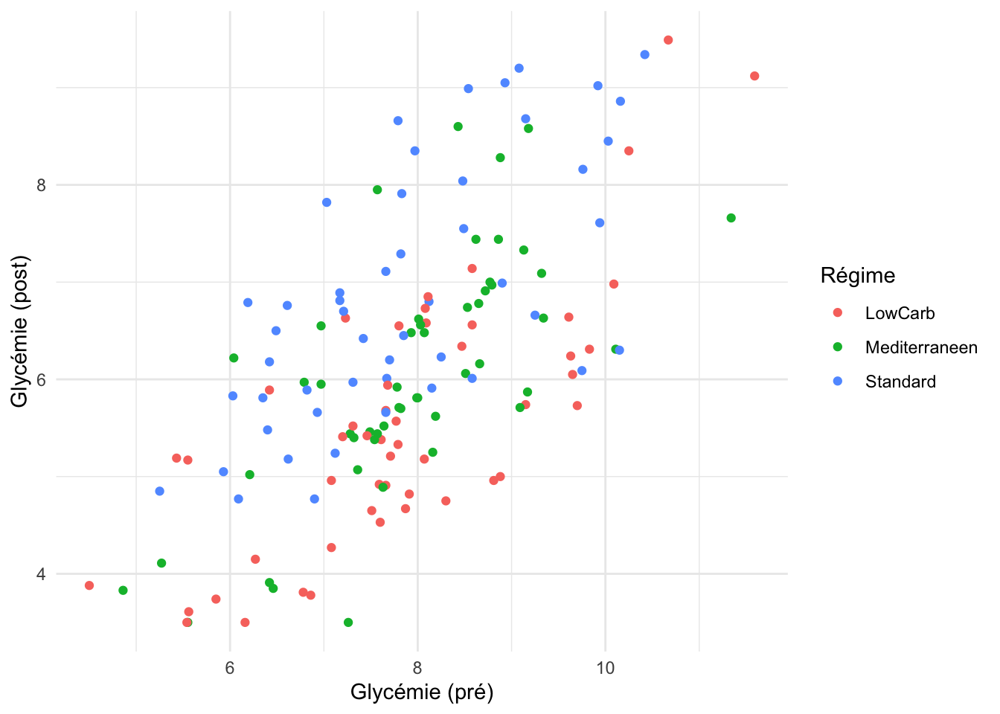
Version Author Date ef88e31 Huong PHAM 2026-03-08 ggplot(diet, aes(x = gly_base, y = gly_post, color = regime)) + geom_point(alpha = 0.6) + geom_smooth(method = "lm", se = FALSE) + labs(x = "Glycémie (pré)", y = "Glycémie (post)", color = "Régime") + theme_minimal()`geom_smooth()` using formula = 'y ~ x'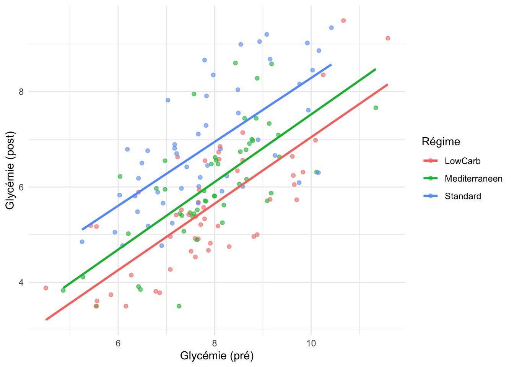
Version Author Date ef88e31 Huong PHAM 2026-03-08 Il ne semble pas y avoir d’intéraction entre la glycémie initiale et le régime.
Réalisez une ANCOVA pour évaluer l’effet du régime après ajustement pour la glycémie initiale.
# 4. ANCOVA sans interaction m2 <- lm(gly_post ~ gly_base + regime, data=diet) summary(m2)Call: lm(formula = gly_post ~ gly_base + regime, data = diet) Residuals: Min 1Q Median 3Q Max -2.1361 -0.6126 -0.1185 0.5139 2.1989 Coefficients: Estimate Std. Error t value Pr(>|t|) (Intercept) 0.11733 0.45550 0.258 0.7971 gly_base 0.69149 0.05571 12.412 < 2e-16 *** regimeMediterraneen 0.45460 0.17975 2.529 0.0125 * regimeStandard 1.30023 0.17971 7.235 2.43e-11 *** --- Signif. codes: 0 '***' 0.001 '**' 0.01 '*' 0.05 '.' 0.1 ' ' 1 Residual standard error: 0.8985 on 146 degrees of freedom Multiple R-squared: 0.588, Adjusted R-squared: 0.5795 F-statistic: 69.45 on 3 and 146 DF, p-value: < 2.2e-16Vérifiez les hypothèses du modèle.
# 5. Vérification des hypothèses plot(m2, which = 2) # QQplot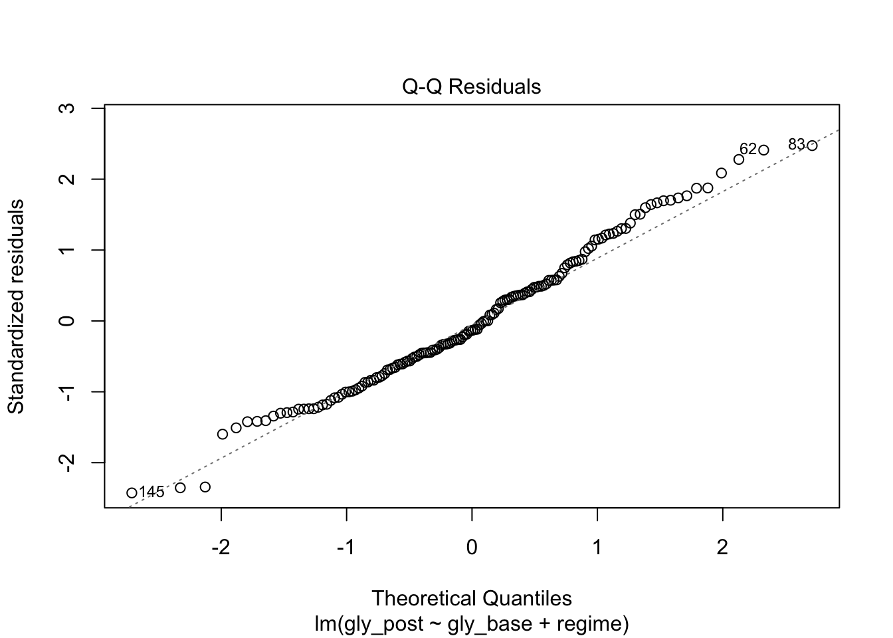
Version Author Date ef88e31 Huong PHAM 2026-03-08 plot(m2, which = 1) # Résidus contre valeurs prédites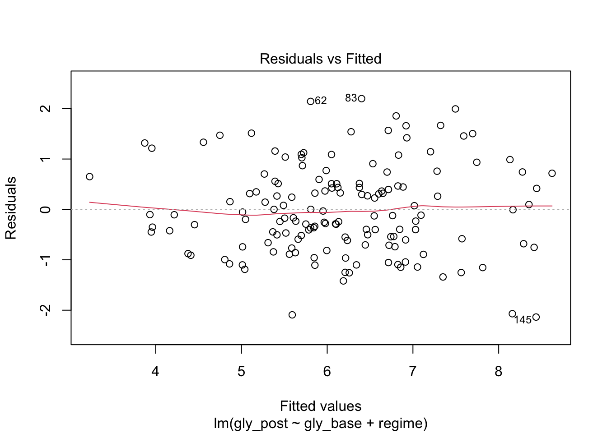
Version Author Date ef88e31 Huong PHAM 2026-03-08 # Homogéneité des pentes m3 <- lm(gly_post ~ gly_base + regime + gly_base:regime, data=diet) library(car) Anova(m3, type = "III")Anova Table (Type III tests) Response: gly_post Sum Sq Df F value Pr(>F) (Intercept) 0.009 1 0.0112 0.9157 gly_base 50.735 1 62.0131 7.546e-13 *** regime 1.752 2 1.0706 0.3455 gly_base:regime 0.063 2 0.0382 0.9625 Residuals 117.812 144 --- Signif. codes: 0 '***' 0.001 '**' 0.01 '*' 0.05 '.' 0.1 ' ' 1La pvaleur du terme d’intéraction > 0.05. Les pentes sont donc homogènes.
Le régime a-t-il un effet significatif sur la glycémie après 12 semaines ? Qu’en est-il de la glycémie initiale ?
# 6. Interprétation du modèle Anova(m2, type = "III")Anova Table (Type III tests) Response: gly_post Sum Sq Df F value Pr(>F) (Intercept) 0.054 1 0.0664 0.7971 gly_base 124.382 1 154.0611 < 2.2e-16 *** regime 43.539 2 26.9639 1.081e-10 *** Residuals 117.874 146 --- Signif. codes: 0 '***' 0.001 '**' 0.01 '*' 0.05 '.' 0.1 ' ' 1Le régime et la glycémie initiale ont un effet statistiquement significatif sur la glycémie 12 semaines après l’initiation du traitement.
Interprétez les coefficients estimés et les différences ajustées entre les régimes.
# 7. Interprétation des résultats summary(m2)Call: lm(formula = gly_post ~ gly_base + regime, data = diet) Residuals: Min 1Q Median 3Q Max -2.1361 -0.6126 -0.1185 0.5139 2.1989 Coefficients: Estimate Std. Error t value Pr(>|t|) (Intercept) 0.11733 0.45550 0.258 0.7971 gly_base 0.69149 0.05571 12.412 < 2e-16 *** regimeMediterraneen 0.45460 0.17975 2.529 0.0125 * regimeStandard 1.30023 0.17971 7.235 2.43e-11 *** --- Signif. codes: 0 '***' 0.001 '**' 0.01 '*' 0.05 '.' 0.1 ' ' 1 Residual standard error: 0.8985 on 146 degrees of freedom Multiple R-squared: 0.588, Adjusted R-squared: 0.5795 F-statistic: 69.45 on 3 and 146 DF, p-value: < 2.2e-16Après ajustement sur la glycémie initiale :
Nous constatons que la glycémie à jeun est supérieure de 0.45 mmol/L pour le régime méditerranéen comparative au régime pauvre en glucide ;
Nous constatons que la glycémie à jeun est supérieur de 1.30 mmol/L pour le régime standard par rapport au régime pauvre en glucides.
Après ajustement sur le régime alimentaire, lorsque la glycémie a jeun initiale est supérieure 1 mmol/L, la glycémie 12 semaines après l’initiation du régime est supérieure de 0.69 mmol/L.
# Différences ajustées library(emmeans) emmeans(m2, pairwise ~ regime, adjust = "BH")$emmeans regime emmean SE df lower.CL upper.CL LowCarb 5.57 0.127 146 5.32 5.82 Mediterraneen 6.02 0.127 146 5.77 6.27 Standard 6.87 0.127 146 6.62 7.12 Confidence level used: 0.95 $contrasts contrast estimate SE df t.ratio p.value LowCarb - Mediterraneen -0.455 0.18 146 -2.529 0.0125 LowCarb - Standard -1.300 0.18 146 -7.235 <0.0001 Mediterraneen - Standard -0.846 0.18 146 -4.705 <0.0001 P value adjustment: BH method for 3 tests
sessionInfo()R version 4.4.2 (2024-10-31)
Platform: aarch64-apple-darwin20
Running under: macOS Ventura 13.6.3
Matrix products: default
BLAS: /Library/Frameworks/R.framework/Versions/4.4-arm64/Resources/lib/libRblas.0.dylib
LAPACK: /Library/Frameworks/R.framework/Versions/4.4-arm64/Resources/lib/libRlapack.dylib; LAPACK version 3.12.0
locale:
[1] en_US.UTF-8/en_US.UTF-8/en_US.UTF-8/C/en_US.UTF-8/en_US.UTF-8
time zone: Europe/Paris
tzcode source: internal
attached base packages:
[1] stats graphics grDevices utils datasets methods base
other attached packages:
[1] emmeans_2.0.1 lubridate_1.9.5 forcats_1.0.1 stringr_1.6.0
[5] dplyr_1.2.0 purrr_1.2.1 readr_2.1.6 tidyr_1.3.2
[9] tibble_3.3.1 ggplot2_4.0.2 tidyverse_2.0.0 car_3.1-5
[13] carData_3.0-6 workflowr_1.7.2
loaded via a namespace (and not attached):
[1] gtable_0.3.6 xfun_0.56 bslib_0.10.0 processx_3.8.6
[5] lattice_0.22-9 callr_3.7.6 tzdb_0.5.0 vctrs_0.7.1
[9] tools_4.4.2 ps_1.9.1 generics_0.1.4 sandwich_3.1-1
[13] pkgconfig_2.0.3 Matrix_1.7-4 RColorBrewer_1.1-3 S7_0.2.1
[17] lifecycle_1.0.5 compiler_4.4.2 farver_2.1.2 git2r_0.36.2
[21] codetools_0.2-20 getPass_0.2-4 httpuv_1.6.16 htmltools_0.5.9
[25] sass_0.4.10 yaml_2.3.12 Formula_1.2-5 later_1.4.6
[29] pillar_1.11.1 jquerylib_0.1.4 whisker_0.4.1 MASS_7.3-65
[33] cachem_1.1.0 multcomp_1.4-29 abind_1.4-8 nlme_3.1-168
[37] tidyselect_1.2.1 digest_0.6.39 mvtnorm_1.3-3 stringi_1.8.7
[41] labeling_0.4.3 splines_4.4.2 rprojroot_2.1.1 fastmap_1.2.0
[45] grid_4.4.2 cli_3.6.5 magrittr_2.0.4 survival_3.8-6
[49] utf8_1.2.6 TH.data_1.1-5 withr_3.0.2 scales_1.4.0
[53] promises_1.5.0 estimability_1.5.1 timechange_0.4.0 rmarkdown_2.30
[57] httr_1.4.8 otel_0.2.0 zoo_1.8-15 hms_1.1.4
[61] coda_0.19-4.1 evaluate_1.0.5 knitr_1.51 mgcv_1.9-4
[65] rlang_1.1.7 Rcpp_1.1.1 glue_1.8.0 rstudioapi_0.18.0
[69] jsonlite_2.0.0 R6_2.6.1 fs_1.6.6